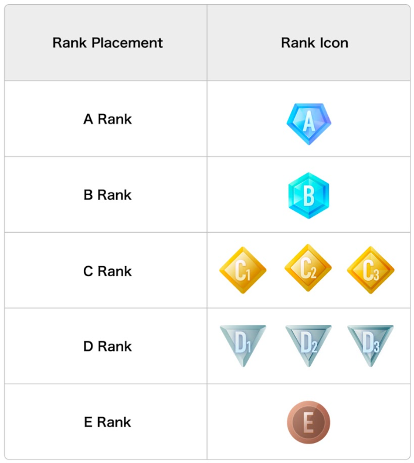

把虚拟形象直播串成一条不费脑的流水线：Reality 主播工作流整合实践
一个每周固定开播的虚拟主播，把 Reality 嵌进日历提醒、OBS 推流、复盘笔记的完整工作流，解决段位结算、联动开关、连续打卡三个最容易断链的环节。
我每周要做的事，以前是散的
我是个固定每周二、四、日晚八点开播的虚拟主播，用的就是主打虚拟形象直播的 Reality官网。内容不算硬核游戏，主要是和观众聊聊天、偶尔唱几句、联动上麦热闹热闹。听起来轻松，但以前每周要手动处理的事加起来挺碎：
开播前半小时，手动掏手机把 Reality 打开、进设置里检查联动开关、对着镜子确认前置摄像头没被刘海遮掉——然后切到 OBS 开推流、切到飞书发开播预告。播的过程中联动申请弹出来要立刻点批准，饰品礼物来了要迅速选佩戴者，播完还要手动记一下今天开了多久、有没有拿到 DAILY 徽章、段位点数大概攒了多少。
最头疼的不是操作多，是忘事。有一次开播四十分钟才想起联动开关没开，那天本来有三个老观众等着上麦聊天；还有一次周末赶稿子忘了开播，DAILY 连续纪录断在 27 天，心疼了好一阵。
这套流程本质上是三件事：按时开播、播的时候不手忙脚乱、播完心里有数。以前我把它当三个独立任务分别处理，现在试着用 Reality 自己的能力加几个常见工具，把三件事拧成一条流水线。
新流程长什么样：三个环节的衔接
整套链我分成「开播前准备 → 直播进行中 → 直播后收尾」三段，每段只需要一两次操作，Reality 自己承担了大部分重复性的判断。
开播前：日历提醒 + Reality 预设置 + OBS 一键推流
安装包从 官方下载 拿的，手机版装完直接能推流，不用额外装 PC 客户端。飞书日历是这条链的起点。我在里面建了三个固定开播时间的重复日程，每个日程提前 30 分钟弹提醒，提醒内容不是空泛的「开播」，而是一条我自己写的 checklist：
- Reality 打开 → 确认段位功能没被关闭
- 开播设置里联动开关打开（我现在默认每次都开，不想接的时候中途关）
- 前置摄像头对准脸，别被刘海挡
- OBS 开推流
这里有个小细节：Reality 的联动开关开播前和直播中都能开，所以我现在开播前就开，播到一半想专心聊天了再随手关掉，不用等开播完了才后悔没开。段位功能默认是开的，但我养成每次开播前扫一眼的习惯——之前有一次误触关掉了，结算时才发现点数没在累计，白播了三天。
直播中：Reality 接管大部分，我只做两个决策
开播之后，Reality 自动做的事：表情追踪、形象渲染、观众进来的欢迎提示、弹幕滚动。我在这个环节只需要盯两个东西：
联动申请的批准/拒绝。申请弹出来有明显提示，我扫一眼对方资料，认识的直接批，不认识的看他历史发言再决定。批准之后对方形象直接出现在我旁边，观众看到的是两个虚拟形象同框。
饰品礼物的佩戴归属。联动期间观众送礼，屏幕底部会弹一个按钮让我选「这件饰品谁戴」。这个小决策我现在基本不靠脑子——如果联动的观众第一次上麦，饰品让他戴；如果是老常客了，我戴。这个规则让我不用每次都纠结。
直播后：Reality 段位点数 + 飞书文档复盘
下播之后我切到 Reality 的「我的资料 → 创作者工具」，扫一眼段位点数有没有增长、DAILY 徽章亮没亮。这个检查不超过 10 秒，亮了就好，没亮就回忆一下今天播了多久——15 分钟以上就满足打卡条件，没亮多半是网络波动没传上去。
然后打开飞书文档里我建的「每周直播复盘」，把今天的主题、联动了谁、最热闹的一段对话记下来，再扫一眼观众的支援者等级有没有新变化。支援者等级是跟着段位一起开的，观众侧每月重置一次，我不用记它的周期。
最容易断链的两个环节，怎么处理
上面说的流程听起来顺，但实际跑起来有两个地方最容易出问题，我踩过坑之后想了点办法。
断链一：DAILY 连续纪录不小心断了
Reality 的 DAILY 徽章是开播就算打卡，哪怕只有 15 分钟。但我有时候加班到十点半才到家，一累就忘了开。
解决办法是加了一条日历规则：如果原定开播日没能开播，当天晚上 11 点之前一定要补开一次，哪怕只对着形象说三句话就关。15 分钟是硬门槛，14 分钟不算。这个规则我在飞书日历里建了一个晚上 10:50 的「补开提醒」，专门对应没按时播的日子。
还有个细节：Reality 的跳过券只影响段位结算周期，不影响 DAILY 的连续纪录。之前我以为用了跳过券连打卡都算跳过，其实不是——该断还是断，所以补开不能省。
断链二：不知道这周段位会不会降
段位是 E 到 A 九级，7 天一个结算周期，18 点升、12–17 点保、0–11 点降。我之前完全不看点数，只在周日结算时才知道结果，有一次攒了 11 点，卡在下线，白白浪费一周。
现在的做法是：每周三晚上扫一次点数。Reality 在段位功能里能看到当前累计点数，我记下周三的数字，就能大概推算周日能到多少。如果周三已经有 14 点了，那剩下几天随便播播就能保段；如果周三只有 8 点，那周四、日两天就得稍微认真播，争取凑够 12。
这个推算不用精确——不需要换算每个 Kudos 等于多少点，大概心里有数就行。Reality文档里有点数的换算公式，但我背不下来，周三那一眼够用了。

效果与边界
这套流程跑了两个月，实际变化是：开播前的准备时间从 10 分钟降到 3 分钟，播完的复盘时间从 20 分钟降到 5 分钟，DAILY 连续纪录从 27 天断过一次之后再也没断过。最实在的收益是不用再记一堆零碎的时间点——日历提醒替我盯开播，Reality 替我盯徽章和点数，我只负责开播内容本身。
但这套流程也有边界。如果你是那种想冲 A 段、每天直播三小时的全职主播，这套轻量化的检查就不够了——你需要更精细地算每个 Kudos 能换多少点，甚至可能要用到 Reality 支持的全身动捕来提升内容质量。对我这种每周三播、每场一个半小时的半全职来说，够用。
还有一个边界：Reality 的表情追踪对光线和前置摄像头位置挺敏感的。如果我突然换了房间、或者刘海长了遮住眼睛，追踪就会飘——头转向左边虚拟形象转到右边，说话的时候嘴型不同步。这个不在流程之内，只能开播前那一眼多留意一下。我现在养成了开播前三秒钟对着镜头眨一下眼、说一句话的习惯，确认追踪正常再开始。

说到底，这条流水线的思路是：把 Reality 自身能承担的重复性判断（徽章累计、段位点数、联动申请提示）全交给它，外部只补日历提醒和复盘笔记这两个它覆盖不了的环节。你不用硬凑什么花里胡哨的工具组合——飞书日历 + Reality + 一个记笔记的地方，够了。
我把这套流程里提到的 Reality 相关配置、段位升降的完整规则、以及 DAILY 徽章和跳过券的微妙关系，都整理在了在线资料里，GitHub 有完整仓库树，Gitee 适合国内拉取，GitCode 作为镜像备份，三处内容保持同步。